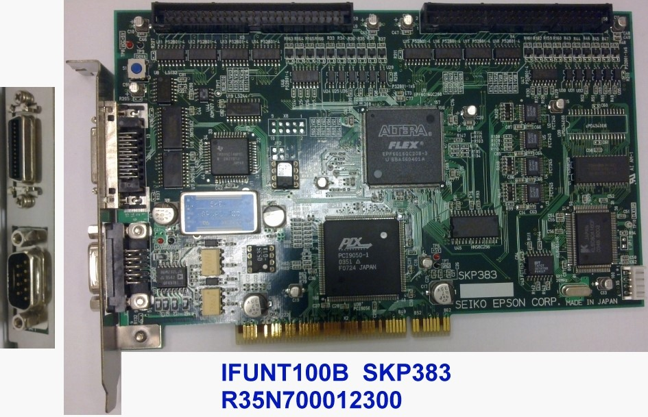

Service History
Subject: Xilinx NS7KW-01 index arm 1 site F, G no vacuum, handler and tester no comms, power trip after shuttle 2 thermo fuse replaced
Handler Model: NS-7080W(NS7KW-01)
Controller: RC520
Date: 12 Jul 2010
Symptom
Index arm 1 site F and G no vacuum.
Action
1) Found new fittings replaced during PM loose.
Tighten back and check vacuum ok.
2) No comm between handler and tester.
Check with dummy tester. Re-load other HEX file and re-sit GPIB card (IFUNT100A), NG.
Changed with spare GPIB card from Getech TR60 ok.
3)Power trip when heater ON after customer replaced shuttle 2 thermo fuse.
Found burnt mark below heater plate. Customer only used one pc of sleeving and it was damaged during replacement resulting to the heater wire and heater plate body short.
Checked heater and fuse resistance ok. Sand away burnt area and added in one more high temp sleeving. Heat up to 100 deg c ok.
Ran 2 trays of dummy units(FG676 27x27 octal site hot) and release to production for monitoring.
Cause
1) Index arm 1 site F and G no vacuum due to loose new air fitting at Index Arm 1.
2) No communications between NS-7080W and tester due to faulty IFUNT100A card in RC520.
3) Power trip when heater ON due to sleeving of thermo fuse torn caused thermo fuse short to handler's ground.
Remarks
IFUNT100A board(SKP383) and IFUNT100B are compatible with IFUNT100 (SKP368).
Though the functions are the same, IFUNT100A and IFUNT100B are much smaller in size.
For all IFUNT boards, use C:\NS7000\Tool\Loader.exe
